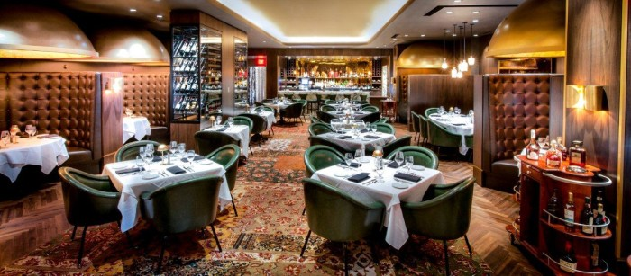

We will never deny a guest,
even the most rediculus request
Home
Reservation
Dinning
Photo Gallary
Attractions
Reviews

Menu
Appetizers
Buffalo Wings
Salt & Pepper, Mild, Parmesan Garlic, Honey BBQ, Buffalo, Spicy Garlic, Hot BBQ, Hot, Blazing
Onion rings
Deep fried to golden perfection
Wood Grilled Shrimp
4 Skewers with simple salt & pepper seasoning with a terriaky sauce
Buffalo Wings
Salt & Pepper, Mild, Parmesan Garlic, Honey BBQ, Buffalo, Spicy Garlic, Hot BBQ, Hot, Blazing
Soup/Salad
Caeser Salad
Mix of crisp romaine, crunchy garlic croutons, parmesan cheese, and our in-house Caesar dressing
House Salad
Romaine salad with cherry tomatoes, olives, and in-house Italian dressing
Sea Food
Crab Linguini Alfredo
Sweet and tender crab meat served with a creamy garlic parmesan sauce covered linguini
Atlantic Salmon
Steamed, tender salmon with a simple honey glaze served with fries
Ahi Tuna
Flacky tuna served wtih mango, avocado, cashews, spicy sesame soy glaze
Twin Lobster Tails
Asparagus, Drawn Butter
Crab Cakes
Freshly caught crabs served with brussels sprouts, corn, tomatoes, fingerlings, mustard cream
Chilean Sea Bass
Flaky sea bass served with a side of whipped potatoes and a champagne truffle sauce
Sushi & Rolls
Dynamite Roll
Tempura Shrimp, Spicy Mayo, Sesame Seeds
Tuna Roll
Spicy Tuna, Avocado, Cucumber
Mexican Roll
Tempura Srhimp and avocado , topped with masago
Spicy Tuna
Spicy Motoyaki Sauce, Cucumber
Spider
Soft Shell Crab Deep Fried, Crab Mix, Fresh Avocado, Cucumber, Nori & Soy Paper, Eel Sauce
California Roll
Crab mix, Motoyaki Sauce, Cucumber, Fresh Avocado
Dragon
Crab mix, Motoyaki Sauce, Cucumber, Eel, Eel Sauce
Rainbow
California Roll, Tuna, Salmon, Shrimp, Yellowtail
Caterpillar Roll
Eel, Cucumber, avocado, Eel Sauce
Shrimp & Lobster Roll
Lobster & Habanero Cream Cheese, Cucumber, Shrimp, Citrus Aioli, Cucumber Salsa
Steaks
All served with 2 sides of mashed potato, loaded baked potato, or veggies
Prime Filet
In-house Chili Ginger Sauce, 8oz or 12oz
Prime Rib Eye
Roasted for 4+ hours with a secret spice mix, Garlic, Salt, Carrots, Onion, and a couple Bay Leaves
Prime New York Strip Loin
Simply grilled to perfection with salt, pepper, and garlic butter, 8oz or 12oz
Center-Cut Sirloin
6oz, 9oz, and 12 oz
Roasted Garlic Filet Medallions
Seared filet medallions topped with roasted garlic butter
Certified Tajima Kobe Beef | Hyogo Prefecture
The Best Of The Best, you will not regret getting this, 4oz, 8oz, or 12oz
Grade A5+ Wagyu | Miyazaki Prefecture
Great Cut of Meat Served with Soy Sause, Wasabi, and Sea Salt, 8oz or 12oz
Burgers & Sandwiches
Served with either seasoned or unseasoned fries
1/2 Pouund Cheese Burger
Angus patty on a slightly grilled brioche bun with cheddar cheese, letuce, tomatoes, onions, and pickels
Santa Fe Burger
Staced high with avocado, pepper jack cheese, red onion, jalapenos, tomatoes, pickles, and spicy Santa Fe sauce
Chili Burger
Freshly made chili with shredded american cheese, sauteed mushrooms, and crispy golden brown onions
Southern Smokehouse Burger
Bacon, chedder cheese, pickles, onion rings, lettuce, tomatoes, garlic aioli and BBQ sauce
Veggie Burger
An almost indistinguishable burger made of soy, wheat, and potato protien and various other plant ingredients
Chicken Sandwich
Large chicken breast marinated in a secret blend of spices and liquids, and deep fried to golden brown perfectness
Salmon Burger
Served on a butterd brioche bun and a tangy and sweet bourbon sauce
Cuban Sanchwich
Kalua-braised pork with ham, swiss cheese, pickles, and mustard on a french baguette
Philli Cheese Steak
Strip sir loin with provolone sauce, sauteed mushrooms, caramelized onions, and sauteed green bell peppers.
Pasta
Sea Food Alfredo
Sauteed shrimps and scallops with a freshly made and creamy alfredo sauce
4 Cheese Ravioli
Filled with ricotta, fontina, mozzerella and parmigiano-reggiano and topped with in-house marinara sauce
Chicken Parmigiana
Two parmesan-breaded chicken breasts covered in marinara sauce and melted cheese, grilled or fried
Chicken Scampi
Sateed onions and Bell peppers with chicken tenderloins wtih a creamy sauce over angel hair pasta
Fettuccine Alfredo
Simple, freshly made alfredo sauce with fettuccine pasta and pepper
Classic Lasagna
Prepared daily with layer off pasta, parmesan, mozzerella, pecorino romano, and meat sauce
Desserts
Red Velvet Cheese Cake with an Oreo Crust
Peanut Butter Pie
Classic Cherry Pie
Tripple Chocolate Cake
Burbon Pecan Pie
Classic Cannoli
Drinks
Red Sangria
Bogle Merlot, Hibiscus, lychee, raspberry, orange, and lime juice
Moscow Mule
Stolichnaya Vodka, lime juice, and goslings ginger beer
Presidential Margarita
Sauzas commemorativo, Cointreau liqueur, Presidente Brandy, sweet and sour mix, and lime juice
Tokyo Mule
Deep Eddy vodka, Joto Yuzu sake, simple syrup, lime, and Awa yuki sparkling
Manhattan
Buleit Rye Whisky, sweet vermouth, and angostura bitters
ScrewDriver
Smirnoff vodka and orage juice
Vodka Martini
Chopin Rye vodka and dry vermouth